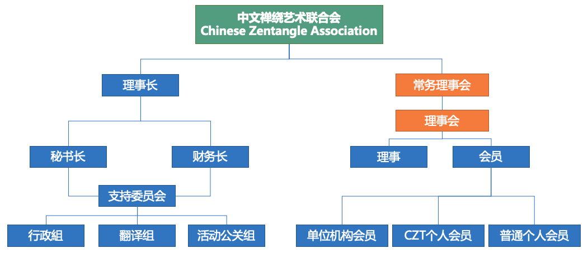

版本号：Ver-CZA20181215
生效时间：2018年12月15日
目录
第一章 总则
第二章 业务范围
第三章 会员
第四章 组织机构和负责人产生、罢免
第五章 资产管理、使用原则
第六章 章程的修改程序
第七章 终止程序及终止后的财产处理
第八章 附则
第一章 总则
第一条 本组织定名为中文禅绕艺术机构（以下简称本机构），英文：Chinese Zentangle Association，缩写：CZA。
第二条 本机构是由Zentangle, Inc.授权好心艺国际股份有限公司*（以下简称CWL）发起的非营利性组织。
第三条 本机构旨在为使用中文交流的CZT、禅绕艺术爱好者提供专业服务。
第四条 本机构接受美国Zentangle,Inc公司的业务指导和监督管理。
第五条 本机构及其所属分会，遵守组织及其分会所在地区法律、法规和国家政策，并恪守社会道德风尚。
第二章 业务范围
第六条 本机构业务范围主要包括但不限于：
(一) 为CZT个人会员提供Zentangle® CZT专属中文资讯支持；
(二) 为普通个人会员提供Zentangle®中文资讯支持；
(三) 为公益性、慈善组织提供教学服务；
(四) 举办禅绕艺术研讨、座谈、交谊、观摩、展览等活动；
(五) 举办符合本机构宗旨的其他相关活动。
第三章 会员
第七条 本机构会员组成分为“CZT个人会员”和“普通个人会员两类：
(一) CZT个人会员：已获得CZT资格认证，建议具备良好的中文听、说能力；
(二) 普通个人会员：禅绕艺术爱好者，建议具备良好的中文听、说能力；
第八条 申请加入本机构的会员，必须具备下列条件：
(一) 有自愿加入本机构的意愿；
(二) 自愿拥护本机构的章程；
(三) 尊重Zentangle,Inc商标著作权及知识产权；
(四) 鼓励CZT个人会员公开发表的禅绕作品使用Zentangle®官方产品进行创作；
第九条 会员入会程序：
(一) 提交入会申请书；
(二) 由CZA会员资格审查小组核定申请资料
1. CZT个人会员申请资料核定后，成为正式注册会；
2. 普通个人会员申请资料核定后，成为正式注册会员；
(三) 由理事长签发会员证。
第十条 普通个人会员享有下列权利：
(一) 参加本机构的活动（包括：课程、展览、共同创作、会员交流、见面会，学习分享等）；
(二) 获得本机构优先服务；
(三) 申请CZT-Asia Seminars时，优先保留席位，亦可优先参与CZT-Asia Seminars相关促销活动；
第十一条 CZT个人会员享有下列权利：
(一) 参加本机构的活动（包括：课程、展览、共同创作、会员交流、见面会，学习分享等）；
(二) 获得本机构优先服务；
(三) 对本机构工作提出建议、指教和监督；
(四) 享有本机构的选举权、被选举权和表决权；
(五) 享有本机构提供的Zentangle相关知识产权法律转介服务；
(六) 有机会优先体验未公开销售的Zentangle新品；
(七) 参与本机构其他官方研讨活动（如：zenAgain，再次参加CZT-Asia Seminars）时，优先保留席位，亦可优先参与相关促销活动；
(八) 享有CZT-Asia Seminars认证推介奖励；
第十二条 普通个人会员须履行下列义务：
(一) 遵守协会章程，执行协会决议
(二) 维护协会合法权益
(三) 根据协会规定按时缴纳会费；
(四) 如实向协会反映情况，提供有关资料。
第十三条 CZT个人会员须履行下列义务：
(一) 遵守协会章程，执行协会决议
(二) 维护协会合法权益
(三) 根据协会规定按时缴纳会费；
(四) 开设符合Zentangle理念的课程
(五) 如实向协会反映情况，提供有关资料
第十四条 会员延迟一个月不缴纳会费，则视为自动退会。
第十五条 会员如有严重违反本章程的行为，经理事会表决通过后，予以除名。
第四章 组织机构和负责人产生、罢免
第十六条 本机构的最高权力机构是常务理事会，常务理事会由好心艺国际股份有限公司任命，其职权是：
(一) 制定和修改章程
(二) 选举和罢免理事，组建理事会
(三) 审议理事会的工作报告
(四) 制定和修改会费标准
(五) 决定会员的吸收和除名
(六) 决定办事机构、分支机构、代表机构和实体机构的设立、变更和注销
(七) 决定终止事宜
(八) 决定其他重大事宜。
第十七条 常务理事会须有2/3以上的常务理事出席方能召开，其决议须经到会常务理事半数以上表决通过方能生效。
第十八条 常务理事会任期每届1年。因特殊情况需提前或延期换届的，须由常务理事会表决通过，报理事长审查并批准。延期换届最长不得超过1年。
第十九条 理事会的产生流程：
(一) CZT会员提出参选理事申请
(二) 常务理事会任命。
第二十条 理事会的职权是：
(一) 执行常务理事会的决议
(二) 筹备召开理事会；
(三) 向常务理事报告工作
(四) 建议会员的吸收和除名
(五) 建议办事机构、分支机构、代表机构和实体机构的设立、变更和注销
(六) 督导本机构各机构开展工作
(七) 制定内部管理制度。
第二十一条 理事会须有2/3以上理事出席方能召开，其决议须经到会理事2/3以上表决通过方能生效。
第二十二条 理事会每年至少召开一次会议。情况特殊的，可采用即时通讯形式召开。
第二十三条 本机构的理事长（会长）、副理事长（副会长）、秘书长必须具备下列条件：
(一) 必须具备CZT资质；
(二) 本机构业务领域内有较大影响
(三) 理事长（会长）、副理事长（副会长）、秘书长最高任职年龄不超过70周岁
(四) 身体健康，能坚持正常工作
(五) 未受过剥夺政治权利的刑事处罚
(六) 具有完全民事行为能力。
第二十四条 本机构理事长（会长）、副理事长（副会长）、秘书长如超过最高任职年龄的，须经常务理事会表决通过，报好心艺国际股份有限公司查并批准后，方可任职。
第二十五条 本机构秘书长及各职能负责人每届任期1年，连任不超过两届。因特殊情况需延长任期的，须经常务理事会2/3以上会员（或会员代表）表决通过，报好心艺国际股份有限公司审查并批准后，方可任职。
第二十六条 本机构理事长（会长）行使下列职权：
(一) 召集和主持常务理事会
(二) 检查常务理事会决议的落实情况
(三) 督导常务理事会工作
(四) 批准常务理事会认命
(五) 批准办事机构、分支机构、代表机构和实体机构的设立、变更和注销
(六) 批准会员的除名
(七) 批准会费标准
(八) 批准终止事宜
(九) 批准其他重大事宜。
第二十七条 本机构秘书长行使下列职权：
(一) 主持办事机构开展日常工作，组织实施年度工作计划
(二) 协调各分支机构、代表机构、实体机构开展工作；
(三) 提名副秘书长以及各机构主要负责人，交常务理事会决定
(四) 处理其他日常事务。
第五章 资产管理、使用原则
第二十八条 本机构经费来源：
(一) 资本投入
(二) 会费
(三) 捐赠；
(四) 政府资助
(五) 在核准的业务范围内开展活动和服务的收入
(六) 利息
(七) 其他合法收入。
第二十九条 本机构按照本章程有关规定收取会员会费。
第三十条 本机构经费必须用于本章程规定的业务范围和事业的发展。
第三十一条 本机构建立严格的财务管理制度。
第三十二条 本机构配备具有专业资格的会计人员。会计不得兼任出纳。会计人员必须进行会计核算，实行会计监督。会计人员调动工作或离职时，必须与接管人员办清交接手续。
第三十三条 本机构的资产管理必须执行所在地法定财务管理制度，接受常务理事会和好心艺国际股份有限公司的监督。资产来源属于捐赠/资助的，必须接受捐赠/资助方的监督，并将有关情况以适当方式向捐赠/资助方公布。
第三十四条 本机构的资产，任何单位、个人不得侵占、私分和挪用。
第三十五条 本机构专职工作人员的工资和保险、福利待遇，参照好心艺国际股份有限公司有关规定执行。
第六章 章程的修改程序
第三十六条 对本机构章程的修改，须经常务理事会表决通过后报理事长审议。
第三十七条 本机构修改的章程，须在常务理事会通过后15日内，报理事长审查同意，由好心艺国际股份有限公司核准后生效。
第七章 终止程序及终止后的财产处理
第三十八条 本机构因故解散或由于分立、合并等原因需要终止的，由常务理事会提出终止动议。
第三十九条 本机构终止动议须经常务理事会表决通过，并报好心艺国际股份有限公司同意。
第四十条 本机构终止前，须在好心艺国际股份有限公司指导下成立清算组织，清理债权债务，处理善后事宜。清算期间，不开展清算以外的活动。
第四十一条 本机构经呈报Zentanlge, Inc.撤回授权即为终止。
第四十二条 本机构终止后的剩余财产，在由好心艺国际股份有限公司全权接管。
第八章 附则
第四十三条 本章程经 2018年12月 15日第 1次常务理事会议表决通过。
第四十四条 本章程的解释权属本机构常务理事会所有。
第四十五条 本章程自常务理事会核准之日起生效。
生效时间：2018年12月15日